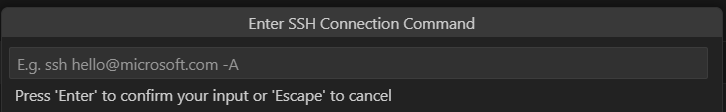
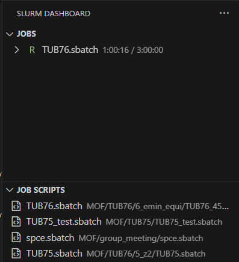

推荐一套方便的远程目录提交slurm任务的方法 - Recommend a convenient method for submitting slurm jobs in remote directories
截至目前，我发现的登录远程目录提交slurm任务的最方便的方法是使用VSCode的Remote-SSH插件和slurm-dashboard插件，可以一键提交slurm任务。这里简单的记录一下我的安装和配置方法。
So far, the most convenient way I’ve found to submit Slurm tasks on a remote directory is by using VSCode’s Remote-SSH plugin combined with the Slurm-Dashboard plugin, allowing one-click submission of Slurm tasks. Here, I’ll briefly document my installation and configuration process.
首先，在vscode中安装Remote-SSH插件。在VSCode中搜索Remote-SSH，点击install即可。打开Remote Explorer窗口，选择New Remote，在弹出的窗口中填入登录信息。如下图所示。
First, install the Remote-SSH plugin in VSCode. Search for “Remote-SSH” in the VSCode extensions marketplace and click Install. Once installed, open the Remote Explorer panel, select New Remote, and input your login information in the pop-up window, as shown in the image below.

每一次登录都需要输入密码。如果想让vscode记住密码，可以在远程目录的home下新建一个文件夹.ssh，然后在.ssh下新建一个文件authorized_keys，将本地的公钥复制到authorized_keys中。这样就可以实现无密码登录。
本地公钥可以使用以下命令查看：
By default, you’ll need to enter your password every time you log in. To enable passwordless login, create a .ssh folder in the home directory of your remote server and add a file named authorized_keys inside it. Copy your local public key into this file.
To view your local public key, use the following command:
1 |
|
将上述代码生成的内容复制到authorized_keys中即可。如果没有公钥，可以使用以下命令生成：
Copy the output and paste it into the authorized_keys file. If you don’t have a public key, generate one using:
1 |
|
Tip：可以在设置中把 Remote.SSH: Show Login Terminal 设成 true。这对于一些需要额外验证的远程服务器（如Compute Canada）非常方便。
Tip: In the VSCode settings, set Remote.SSH: Show Login Terminal to true for convience. This is particularly helpful if your remote server (e.g., Compute Canada) requires additional authentication steps.
接下来是安装slurm-dashboard插件。方法同上。注意，每当登录一个新的远程目录时，都需要在新的远程目录中安装slurm-dashboard插件。
安装好后，打开slurm-dashboard的窗口，它可以自动寻找所有正在运行或正在等待的slurm任务，以及自动寻找所有的脚本文件（拓展名为.sbatch）。如下图所示。
Next, install the Slurm-Dashboard plugin in the same way. Note that you’ll need to install this plugin separately for each new remote directory.
After installation, open the Slurm-Dashboard panel. It will automatically detect all running or queued Slurm tasks, as well as all script files with the .sbatch extension in the directory, as shown below.

可以在slurm-dashboard中直接点击任务，查看任务的详细信息。也可以在slurm-dashboard中点击脚本文件，直接提交任务。
You can click on any task in the Slurm-Dashboard to view detailed information about it. You can also click on a script file directly within the Slurm-Dashboard to submit a task with a single click.
这套方法唯一的缺点是上传/下载文件稍有复杂：需要再打开一个vscode窗口，然后在不同窗口之间互相拖拽文件。（如果想要更方便地传输文件的话，可以使用WinSCP。）
The only drawback of this method is that uploading/downloading files is slightly cumbersome—you need to open another VSCode window and drag files between the two windows. (For easier file transfers, you can use WinSCP.)
2025.01.14 补充：
除了VSCode，Cursor和WindSurf也可以安装这两个插件，使用方法类似。